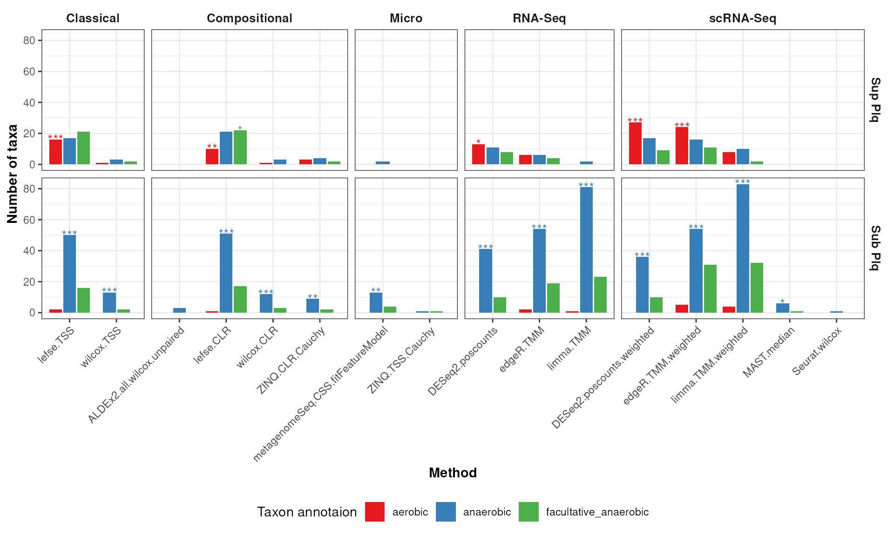

HMP_2012_16S_gingival_V35_subset - subgingival vs supragingival
Source:vignettes/articles/HMP_2012_16S_gingival_V35_subset.Rmd
HMP_2012_16S_gingival_V35_subset.Rmd## Error in get(paste0(generic, ".", class), envir = get_method_env()) :
## object 'type_sum.accel' not found
library(MicrobiomeBenchmarkData)
library(mia)
library(benchdamic)
library(dplyr)
library(ggplot2)
library(gridExtra)
library(purrr)Import data
dat_name <-'HMP_2012_16S_gingival_V35_subset'
conditions_col <- 'body_subsite'
conditions <- c(condB = 'subgingival_plaque', condA = 'supragingival_plaque')
tse <- getBenchmarkData(dat_name, dryrun = FALSE)[[1]]
tse <- filterTaxa(tse)
colData(tse)[[conditions_col]] <-
factor(colData(tse)[[conditions_col]], levels = conditions)
tse## class: TreeSummarizedExperiment
## dim: 783 76
## metadata(0):
## assays(1): counts
## rownames(783): OTU_97.31247 OTU_97.44487 ... OTU_97.45365 OTU_97.45307
## rowData names(7): kingdom phylum ... genus taxon_annotation
## colnames(76): 700023057 700023179 ... 700114009 700114338
## colData names(13): dataset subject_id ... sequencing_method
## variable_region_16s
## reducedDimNames(0):
## mainExpName: NULL
## altExpNames(0):
## rowLinks: a LinkDataFrame (783 rows)
## rowTree: 1 phylo tree(s) (892 leaves)
## colLinks: NULL
## colTree: NULLPrior knowledge
row_data <- as.data.frame(rowData(tse))
prior_info <- row_data[, c('genus', 'taxon_annotation')]
prior_info$taxon_name <- rownames(prior_info)
prior_info$new_names <- paste0(prior_info$taxon_name, '|', prior_info$genus)
head(prior_info)## genus taxon_annotation taxon_name
## OTU_97.31247 Streptococcus facultative_anaerobic OTU_97.31247
## OTU_97.44487 Streptococcus facultative_anaerobic OTU_97.44487
## OTU_97.34979 Streptococcus facultative_anaerobic OTU_97.34979
## OTU_97.34572 Streptococcus facultative_anaerobic OTU_97.34572
## OTU_97.42259 Streptococcus facultative_anaerobic OTU_97.42259
## OTU_97.34698 Streptococcus facultative_anaerobic OTU_97.34698
## new_names
## OTU_97.31247 OTU_97.31247|Streptococcus
## OTU_97.44487 OTU_97.44487|Streptococcus
## OTU_97.34979 OTU_97.34979|Streptococcus
## OTU_97.34572 OTU_97.34572|Streptococcus
## OTU_97.42259 OTU_97.42259|Streptococcus
## OTU_97.34698 OTU_97.34698|StreptococcusConvert to phyloseq
ps <- makePhyloseqFromTreeSummarizedExperiment(tse)
phyloseq::sample_data(ps)$body_subsite <-
factor(phyloseq::sample_data(ps)$body_subsite)
ps## phyloseq-class experiment-level object
## otu_table() OTU Table: [ 783 taxa and 76 samples ]
## sample_data() Sample Data: [ 76 samples by 13 sample variables ]
## tax_table() Taxonomy Table: [ 783 taxa by 6 taxonomic ranks ]
## phy_tree() Phylogenetic Tree: [ 783 tips and 778 internal nodes ]Run DA
ps <- runNormalizations(set_norm_list(), ps, verbose = FALSE)
zw <- weights_ZINB(ps, design = conditions_col)
DA_methods <- set_DA_methods_list(conditions_col, conditions)
for (i in seq_along(DA_methods)) {
if (grepl("Seurat", names(DA_methods)[i])) {
names(DA_methods[[i]]$contrast) <- NULL
} else {
next
}
}
names(DA_methods)## [1] "DA_edgeR.1" "DA_edgeR.1" "DA_DESeq2.1"
## [4] "DA_DESeq2.1" "DA_limma.1" "DA_limma.1"
## [7] "DA_metagenomeSeq.1" "DA_ALDEx2.1" "DA_MAST.1"
## [10] "DA_Seurat.1" "ancombc.1" "wilcox.3"
## [13] "wilcox.4" "ZINQ.9" "ZINQ.10"
## [16] "lefse.12" "lefse.13"Run all of the differential analysis (DA) methods:
tim <- system.time({
DA_output <- vector("list", length(DA_methods))
for (i in seq_along(DA_output)) {
# message(
# "Running method ", i, ": ", names(DA_methods)[i], " - ", Sys.time()
# )
DA_output[[i]] <- tryCatch(
error = function(e) NULL,
runDA(DA_methods[i], ps, weights = zw, verbose = FALSE)
)
}
DA_output <- purrr::list_flatten(DA_output, name_spec = "{inner}")
DA_output <- purrr::discard(DA_output, is.null)
})
tim## user system elapsed
## 48.370 0.551 48.651Enrichment
Get direction
direction <- get_direction_cols(DA_output, conditions_col, conditions)Enrichment (adjP <= 0.1)
enrichment <- createEnrichment(
object = DA_output,
priorKnowledge = prior_info,
enrichmentCol = "taxon_annotation",
namesCol = "new_names",
slot = "pValMat", colName = "adjP", type = "pvalue",
direction = direction,
threshold_pvalue = 0.1,
threshold_logfc = 0,
top = NULL, # No top feature selected
alternative = "greater",
verbose = FALSE
)Plot enrichment
enrich_plot <- plot_enrichment(
enrichment = enrichment,
enrichment_col = "taxon_annotation",
levels_to_plot = c("aerobic", "anaerobic", "facultative_anaerobic"),
conditions = c(condB = 'subgingival', condA = 'supragingival')
)
enrich_plot2 <- plot_enrichment_2(
enrich_plot,
dir = c(up = 'Sup Plq', down = 'Sub Plq')
)
enrich_plot2
Putative true positives - putative false positives
Calculate TP - FP ratio (no threshold)
positives <- createPositives(
object = DA_output,
priorKnowledge = prior_info,
enrichmentCol = "taxon_annotation", namesCol = "new_names",
slot = "pValMat", colName = "rawP", type = "pvalue",
direction = direction,
threshold_pvalue = 1,
threshold_logfc = 0,
top = seq.int(from = 0, to = 50, by = 5),
alternative = "greater",
verbose = FALSE,
TP = list(c("DOWN Abundant", "anaerobic"), c("UP Abundant", "aerobic")),
FP = list(c("DOWN Abundant", "aerobic"), c("UP Abundant", "anaerobic"))
) |>
left_join(get_meth_class(), by = 'method')Plot TP - FP
positive_plots <- plot_positives(positives) |>
map( ~ {
.x +
theme(
axis.title = element_text(size = 17),
axis.text = element_text(size = 15),
legend.text = element_text(size = 13),
strip.text = element_text(size = 17)
)
})
grid.arrange(grobs = positive_plots, ncol = 3)
Session info
sessioninfo::session_info()## ─ Session info ───────────────────────────────────────────────────────────────
## setting value
## version R version 4.4.2 (2024-10-31)
## os Ubuntu 24.04.1 LTS
## system x86_64, linux-gnu
## ui X11
## language en
## collate en_US.UTF-8
## ctype en_US.UTF-8
## tz Etc/UTC
## date 2025-01-07
## pandoc 3.6 @ /usr/bin/ (via rmarkdown)
##
## ─ Packages ───────────────────────────────────────────────────────────────────
## package * version date (UTC) lib source
## abind 1.4-8 2024-09-12 [1] RSPM (R 4.4.0)
## ade4 1.7-22 2023-02-06 [1] RSPM (R 4.4.0)
## ALDEx2 1.38.0 2024-10-29 [1] Bioconductor 3.20 (R 4.4.2)
## ANCOMBC 2.8.0 2024-10-29 [1] Bioconductor 3.20 (R 4.4.2)
## annotate 1.84.0 2024-10-29 [1] Bioconductor 3.20 (R 4.4.2)
## AnnotationDbi 1.68.0 2024-10-29 [1] Bioconductor 3.20 (R 4.4.2)
## ape 5.8-1 2024-12-16 [1] RSPM (R 4.4.0)
## aplot 0.2.4 2024-12-17 [1] RSPM (R 4.4.0)
## backports 1.5.0 2024-05-23 [1] RSPM (R 4.4.0)
## base64enc 0.1-3 2015-07-28 [1] RSPM (R 4.4.0)
## beachmat 2.22.0 2024-10-29 [1] Bioconductor 3.20 (R 4.4.2)
## beeswarm 0.4.0 2021-06-01 [1] RSPM (R 4.4.0)
## benchdamic * 1.11.0 2024-05-01 [1] Bioconductor 3.20 (R 4.4.0)
## biglm 0.9-3 2024-06-12 [1] RSPM (R 4.4.0)
## Biobase * 2.66.0 2024-10-29 [1] Bioconductor 3.20 (R 4.4.2)
## BiocFileCache 2.14.0 2024-10-29 [1] Bioconductor 3.20 (R 4.4.2)
## BiocGenerics * 0.52.0 2024-10-29 [1] Bioconductor 3.20 (R 4.4.2)
## BiocNeighbors 2.0.1 2024-11-28 [1] Bioconductor 3.20 (R 4.4.2)
## BiocParallel 1.40.0 2024-10-29 [1] Bioconductor 3.20 (R 4.4.2)
## BiocSingular 1.22.0 2024-10-29 [1] Bioconductor 3.20 (R 4.4.2)
## biomformat 1.34.0 2024-10-29 [1] Bioconductor 3.20 (R 4.4.2)
## Biostrings * 2.74.1 2024-12-16 [1] Bioconductor 3.20 (R 4.4.2)
## bit 4.5.0.1 2024-12-03 [1] RSPM (R 4.4.0)
## bit64 4.5.2 2024-09-22 [1] RSPM (R 4.4.0)
## bitops 1.0-9 2024-10-03 [1] RSPM (R 4.4.0)
## blob 1.2.4 2023-03-17 [1] RSPM (R 4.4.0)
## bluster 1.16.0 2024-10-29 [1] Bioconductor 3.20 (R 4.4.2)
## boot 1.3-31 2024-08-28 [2] CRAN (R 4.4.2)
## brio 1.1.5 2024-04-24 [1] RSPM (R 4.4.0)
## broom 1.0.7 2024-09-26 [1] RSPM (R 4.4.0)
## bslib 0.8.0 2024-07-29 [1] RSPM (R 4.4.0)
## cachem 1.1.0 2024-05-16 [1] RSPM (R 4.4.0)
## caTools 1.18.3 2024-09-04 [1] RSPM (R 4.4.0)
## cellranger 1.1.0 2016-07-27 [1] RSPM (R 4.4.0)
## checkmate 2.3.2 2024-07-29 [1] RSPM (R 4.4.0)
## class 7.3-22 2023-05-03 [2] CRAN (R 4.4.2)
## cli 3.6.3 2024-06-21 [1] RSPM (R 4.4.0)
## clue 0.3-66 2024-11-13 [1] RSPM (R 4.4.0)
## cluster 2.1.8 2024-12-11 [2] RSPM (R 4.4.0)
## codetools 0.2-20 2024-03-31 [2] CRAN (R 4.4.2)
## coin 1.4-3 2023-09-27 [1] RSPM (R 4.4.0)
## colorspace 2.1-1 2024-07-26 [1] RSPM (R 4.4.0)
## CompQuadForm 1.4.3 2017-04-12 [1] RSPM (R 4.4.0)
## corncob 0.4.1 2024-01-10 [1] RSPM (R 4.4.0)
## corpcor 1.6.10 2021-09-16 [1] RSPM (R 4.4.0)
## cowplot 1.1.3 2024-01-22 [1] RSPM (R 4.4.0)
## crayon 1.5.3 2024-06-20 [1] RSPM (R 4.4.0)
## curl 6.1.0 2025-01-06 [1] RSPM (R 4.4.0)
## CVXR 1.0-15 2024-11-07 [1] RSPM (R 4.4.0)
## data.table 1.16.4 2024-12-06 [1] RSPM (R 4.4.0)
## DBI 1.2.3 2024-06-02 [1] RSPM (R 4.4.0)
## dbplyr 2.5.0 2024-03-19 [1] RSPM (R 4.4.0)
## dearseq 1.18.0 2024-10-29 [1] Bioconductor 3.20 (R 4.4.2)
## DECIPHER 3.2.0 2024-10-29 [1] Bioconductor 3.20 (R 4.4.2)
## decontam 1.26.0 2024-10-29 [1] Bioconductor 3.20 (R 4.4.2)
## DelayedArray 0.32.0 2024-10-29 [1] Bioconductor 3.20 (R 4.4.2)
## DelayedMatrixStats 1.28.0 2024-10-29 [1] Bioconductor 3.20 (R 4.4.2)
## deldir 2.0-4 2024-02-28 [1] RSPM (R 4.4.0)
## DEoptimR 1.1-3-1 2024-11-23 [1] RSPM (R 4.4.0)
## desc 1.4.3 2023-12-10 [1] RSPM (R 4.4.0)
## DescTools 0.99.58 2024-11-08 [1] RSPM (R 4.4.0)
## DESeq2 1.46.0 2024-10-29 [1] Bioconductor 3.20 (R 4.4.2)
## digest 0.6.37 2024-08-19 [1] RSPM (R 4.4.0)
## directlabels 2024.1.21 2024-01-24 [1] RSPM (R 4.4.0)
## DirichletMultinomial 1.48.0 2024-10-29 [1] Bioconductor 3.20 (R 4.4.2)
## doParallel 1.0.17 2022-02-07 [1] RSPM (R 4.4.0)
## doRNG 1.8.6 2023-01-16 [1] RSPM (R 4.4.0)
## dotCall64 1.2 2024-10-04 [1] RSPM (R 4.4.0)
## dplyr * 1.1.4 2023-11-17 [1] RSPM (R 4.4.0)
## e1071 1.7-16 2024-09-16 [1] RSPM (R 4.4.0)
## edgeR 4.4.1 2024-12-02 [1] Bioconductor 3.20 (R 4.4.2)
## ellipse 0.5.0 2023-07-20 [1] RSPM (R 4.4.0)
## energy 1.7-12 2024-08-24 [1] RSPM (R 4.4.0)
## evaluate 1.0.1 2024-10-10 [1] RSPM (R 4.4.0)
## Exact 3.3 2024-07-21 [1] RSPM (R 4.4.0)
## expm 1.0-0 2024-08-19 [1] RSPM (R 4.4.0)
## farver 2.1.2 2024-05-13 [1] RSPM (R 4.4.0)
## fastDummies 1.7.4 2024-08-16 [1] RSPM (R 4.4.0)
## fastmap 1.2.0 2024-05-15 [1] RSPM (R 4.4.0)
## fBasics 4041.97 2024-08-19 [1] RSPM (R 4.4.0)
## filelock 1.0.3 2023-12-11 [1] RSPM (R 4.4.0)
## fitdistrplus 1.2-1 2024-07-12 [1] RSPM (R 4.4.0)
## forcats 1.0.0 2023-01-29 [1] RSPM (R 4.4.0)
## foreach 1.5.2 2022-02-02 [1] RSPM (R 4.4.0)
## foreign 0.8-87 2024-06-26 [2] CRAN (R 4.4.2)
## Formula 1.2-5 2023-02-24 [1] RSPM (R 4.4.0)
## formula.tools 1.7.1 2018-03-01 [1] RSPM (R 4.4.0)
## fs 1.6.5 2024-10-30 [1] RSPM (R 4.4.0)
## future 1.34.0 2024-07-29 [1] RSPM (R 4.4.0)
## future.apply 1.11.3 2024-10-27 [1] RSPM (R 4.4.0)
## genefilter 1.88.0 2024-10-29 [1] Bioconductor 3.20 (R 4.4.2)
## generics 0.1.3 2022-07-05 [1] RSPM (R 4.4.0)
## GenomeInfoDb * 1.42.1 2024-11-28 [1] Bioconductor 3.20 (R 4.4.2)
## GenomeInfoDbData 1.2.13 2025-01-07 [1] Bioconductor
## GenomicRanges * 1.58.0 2024-10-29 [1] Bioconductor 3.20 (R 4.4.2)
## getopt 1.20.4 2023-10-01 [1] RSPM (R 4.4.0)
## ggbeeswarm 0.7.2 2023-04-29 [1] RSPM (R 4.4.0)
## ggdendro 0.2.0 2024-02-23 [1] RSPM (R 4.4.0)
## ggfun 0.1.8 2024-12-03 [1] RSPM (R 4.4.0)
## ggplot2 * 3.5.1 2024-04-23 [1] RSPM (R 4.4.0)
## ggplotify 0.1.2 2023-08-09 [1] RSPM (R 4.4.0)
## ggrepel 0.9.6 2024-09-07 [1] RSPM (R 4.4.0)
## ggridges 0.5.6 2024-01-23 [1] RSPM (R 4.4.0)
## ggtree 3.14.0 2024-10-29 [1] Bioconductor 3.20 (R 4.4.2)
## gld 2.6.6 2022-10-23 [1] RSPM (R 4.4.0)
## glmnet 4.1-8 2023-08-22 [1] RSPM (R 4.4.0)
## globals 0.16.3 2024-03-08 [1] RSPM (R 4.4.0)
## glue 1.8.0 2024-09-30 [1] RSPM (R 4.4.0)
## gmp 0.7-5 2024-08-23 [1] RSPM (R 4.4.0)
## goftest 1.2-3 2021-10-07 [1] RSPM (R 4.4.0)
## gplots 3.2.0 2024-10-05 [1] RSPM (R 4.4.0)
## gridExtra * 2.3 2017-09-09 [1] RSPM (R 4.4.0)
## gridGraphics 0.5-1 2020-12-13 [1] RSPM (R 4.4.0)
## gsl 2.1-8 2023-01-24 [1] RSPM (R 4.4.0)
## gtable 0.3.6 2024-10-25 [1] RSPM (R 4.4.0)
## gtools 3.9.5 2023-11-20 [1] RSPM (R 4.4.0)
## GUniFrac 1.8 2023-09-14 [1] RSPM (R 4.4.0)
## haven 2.5.4 2023-11-30 [1] RSPM (R 4.4.0)
## Hmisc 5.2-1 2024-12-02 [1] RSPM (R 4.4.0)
## hms 1.1.3 2023-03-21 [1] RSPM (R 4.4.0)
## htmlTable 2.4.3 2024-07-21 [1] RSPM (R 4.4.0)
## htmltools 0.5.8.1 2024-04-04 [1] RSPM (R 4.4.0)
## htmlwidgets 1.6.4 2023-12-06 [1] RSPM (R 4.4.0)
## httpuv 1.6.15 2024-03-26 [1] RSPM (R 4.4.0)
## httr 1.4.7 2023-08-15 [1] RSPM (R 4.4.0)
## ica 1.0-3 2022-07-08 [1] RSPM (R 4.4.0)
## igraph 2.1.2 2024-12-07 [1] RSPM (R 4.4.0)
## inline 0.3.20 2024-11-10 [1] RSPM (R 4.4.0)
## interp 1.1-6 2024-01-26 [1] RSPM (R 4.4.0)
## IRanges * 2.40.1 2024-12-05 [1] Bioconductor 3.20 (R 4.4.2)
## irlba 2.3.5.1 2022-10-03 [1] RSPM (R 4.4.0)
## iterators 1.0.14 2022-02-05 [1] RSPM (R 4.4.0)
## janeaustenr 1.0.0 2022-08-26 [1] RSPM (R 4.4.0)
## jomo 2.7-6 2023-04-15 [1] RSPM (R 4.4.0)
## jpeg 0.1-10 2022-11-29 [1] RSPM (R 4.4.0)
## jquerylib 0.1.4 2021-04-26 [1] RSPM (R 4.4.0)
## jsonlite 1.8.9 2024-09-20 [1] RSPM (R 4.4.0)
## KEGGREST 1.46.0 2024-10-29 [1] Bioconductor 3.20 (R 4.4.2)
## KernSmooth 2.23-24 2024-05-17 [2] CRAN (R 4.4.2)
## knitr 1.49 2024-11-08 [1] RSPM (R 4.4.0)
## labeling 0.4.3 2023-08-29 [1] RSPM (R 4.4.0)
## later 1.4.1 2024-11-27 [1] RSPM (R 4.4.0)
## lattice 0.22-6 2024-03-20 [2] CRAN (R 4.4.2)
## latticeExtra 0.6-30 2022-07-04 [1] RSPM (R 4.4.0)
## lazyeval 0.2.2 2019-03-15 [1] RSPM (R 4.4.0)
## lefser 1.16.0 2024-10-29 [1] Bioconductor 3.20 (R 4.4.2)
## leiden 0.4.3.1 2023-11-17 [1] RSPM (R 4.4.0)
## libcoin 1.0-10 2023-09-27 [1] RSPM (R 4.4.0)
## lifecycle 1.0.4 2023-11-07 [1] RSPM (R 4.4.0)
## limma 3.62.1 2024-11-03 [1] Bioconductor 3.20 (R 4.4.2)
## listenv 0.9.1 2024-01-29 [1] RSPM (R 4.4.0)
## lme4 1.1-35.5 2024-07-03 [1] RSPM (R 4.4.0)
## lmerTest 3.1-3 2020-10-23 [1] RSPM (R 4.4.0)
## lmom 3.2 2024-09-30 [1] RSPM (R 4.4.0)
## lmtest 0.9-40 2022-03-21 [1] RSPM (R 4.4.0)
## locfit 1.5-9.10 2024-06-24 [1] RSPM (R 4.4.0)
## logistf 1.26.0 2023-08-18 [1] RSPM (R 4.4.0)
## lpSolve 5.6.23 2024-12-14 [1] RSPM (R 4.4.0)
## Maaslin2 1.19.0 2024-05-01 [1] Bioconductor 3.20 (R 4.4.0)
## magrittr 2.0.3 2022-03-30 [1] RSPM (R 4.4.0)
## MASS 7.3-61 2024-06-13 [2] CRAN (R 4.4.2)
## MAST 1.32.0 2024-10-29 [1] Bioconductor 3.20 (R 4.4.2)
## Matrix 1.7-1 2024-10-18 [2] CRAN (R 4.4.2)
## MatrixGenerics * 1.18.0 2024-10-29 [1] Bioconductor 3.20 (R 4.4.2)
## MatrixModels 0.5-3 2023-11-06 [1] RSPM (R 4.4.0)
## matrixStats * 1.4.1 2024-09-08 [1] RSPM (R 4.4.0)
## mediation 4.5.0 2019-10-08 [1] RSPM (R 4.4.0)
## memoise 2.0.1 2021-11-26 [1] RSPM (R 4.4.0)
## metagenomeSeq 1.47.0 2024-05-01 [1] Bioconductor 3.20 (R 4.4.0)
## mgcv 1.9-1 2023-12-21 [2] CRAN (R 4.4.2)
## MGLM 0.2.1 2022-04-13 [1] RSPM (R 4.4.0)
## mia * 1.14.0 2024-10-29 [1] Bioconductor 3.20 (R 4.4.2)
## mice 3.17.0 2024-11-27 [1] RSPM (R 4.4.0)
## microbiome 1.28.0 2024-10-29 [1] Bioconductor 3.20 (R 4.4.2)
## MicrobiomeBenchmarkData * 1.8.0 2024-10-31 [1] Bioconductor 3.20 (R 4.4.2)
## MicrobiomeBenchmarkDataAnalyses * 0.99.19 2025-01-07 [1] local
## MicrobiomeStat 1.2 2024-04-01 [1] RSPM (R 4.4.0)
## mime 0.12 2021-09-28 [1] RSPM (R 4.4.0)
## miniUI 0.1.1.1 2018-05-18 [1] RSPM (R 4.4.0)
## minqa 1.2.8 2024-08-17 [1] RSPM (R 4.4.0)
## mitml 0.4-5 2023-03-08 [1] RSPM (R 4.4.0)
## mitools 2.4 2019-04-26 [1] RSPM (R 4.4.0)
## mixOmics 6.30.0 2024-10-29 [1] Bioconductor 3.20 (R 4.4.2)
## modeest 2.4.0 2019-11-18 [1] RSPM (R 4.4.0)
## modeltools 0.2-23 2020-03-05 [1] RSPM (R 4.4.0)
## multcomp 1.4-26 2024-07-18 [1] RSPM (R 4.4.0)
## MultiAssayExperiment * 1.32.0 2024-10-29 [1] Bioconductor 3.20 (R 4.4.2)
## multtest 2.62.0 2024-10-29 [1] Bioconductor 3.20 (R 4.4.2)
## munsell 0.5.1 2024-04-01 [1] RSPM (R 4.4.0)
## mvtnorm 1.3-2 2024-11-04 [1] RSPM (R 4.4.0)
## NADA 1.6-1.1 2020-03-22 [1] RSPM (R 4.4.0)
## nlme 3.1-166 2024-08-14 [2] CRAN (R 4.4.2)
## nloptr 2.1.1 2024-06-25 [1] RSPM (R 4.4.0)
## nnet 7.3-19 2023-05-03 [2] CRAN (R 4.4.2)
## NOISeq 2.50.0 2024-10-29 [1] Bioconductor 3.20 (R 4.4.2)
## numDeriv 2016.8-1.1 2019-06-06 [1] RSPM (R 4.4.0)
## operator.tools 1.6.3 2017-02-28 [1] RSPM (R 4.4.0)
## optparse 1.7.5 2024-04-16 [1] RSPM (R 4.4.0)
## pan 1.9 2023-12-07 [1] RSPM (R 4.4.0)
## parallelly 1.41.0 2024-12-18 [1] RSPM (R 4.4.0)
## patchwork 1.3.0 2024-09-16 [1] RSPM (R 4.4.0)
## pbapply 1.7-2 2023-06-27 [1] RSPM (R 4.4.0)
## pcaPP 2.0-5 2024-08-19 [1] RSPM (R 4.4.0)
## permute 0.9-7 2022-01-27 [1] RSPM (R 4.4.0)
## phyloseq 1.50.0 2024-10-29 [1] Bioconductor 3.20 (R 4.4.2)
## pillar 1.10.0 2024-12-17 [1] RSPM (R 4.4.0)
## pkgconfig 2.0.3 2019-09-22 [1] RSPM (R 4.4.0)
## pkgdown 2.1.1 2024-09-17 [1] RSPM (R 4.4.0)
## plotly 4.10.4 2024-01-13 [1] RSPM (R 4.4.0)
## plyr 1.8.9 2023-10-02 [1] RSPM (R 4.4.0)
## png 0.1-8 2022-11-29 [1] RSPM (R 4.4.0)
## polyclip 1.10-7 2024-07-23 [1] RSPM (R 4.4.0)
## prettyunits 1.2.0 2023-09-24 [1] RSPM (R 4.4.0)
## progress 1.2.3 2023-12-06 [1] RSPM (R 4.4.0)
## progressr 0.15.1 2024-11-22 [1] RSPM (R 4.4.0)
## promises 1.3.2 2024-11-28 [1] RSPM (R 4.4.0)
## proxy 0.4-27 2022-06-09 [1] RSPM (R 4.4.0)
## purrr * 1.0.2 2023-08-10 [1] RSPM (R 4.4.0)
## quadprog 1.5-8 2019-11-20 [1] RSPM (R 4.4.0)
## quantreg 5.99.1 2024-11-22 [1] RSPM (R 4.4.0)
## R6 2.5.1 2021-08-19 [1] RSPM (R 4.4.0)
## ragg 1.3.3 2024-09-11 [1] RSPM (R 4.4.0)
## RANN 2.6.2 2024-08-25 [1] RSPM (R 4.4.0)
## rARPACK 0.11-0 2016-03-10 [1] RSPM (R 4.4.0)
## rbibutils 2.3 2024-10-04 [1] RSPM (R 4.4.0)
## rbiom 1.0.3 2021-11-05 [1] RSPM (R 4.4.0)
## RColorBrewer 1.1-3 2022-04-03 [1] RSPM (R 4.4.0)
## Rcpp 1.0.13-1 2024-11-02 [1] RSPM (R 4.4.0)
## RcppAnnoy 0.0.22 2024-01-23 [1] RSPM (R 4.4.0)
## RcppHNSW 0.6.0 2024-02-04 [1] RSPM (R 4.4.0)
## RcppParallel 5.1.9 2024-08-19 [1] RSPM (R 4.4.0)
## RcppZiggurat 0.1.6 2020-10-20 [1] RSPM (R 4.4.0)
## Rdpack 2.6.2 2024-11-15 [1] RSPM (R 4.4.0)
## readxl 1.4.3 2023-07-06 [1] RSPM (R 4.4.0)
## reshape2 1.4.4 2020-04-09 [1] RSPM (R 4.4.0)
## reticulate 1.40.0 2024-11-15 [1] RSPM (R 4.4.0)
## Rfast 2.1.3 2024-12-31 [1] RSPM (R 4.4.0)
## rhdf5 2.50.1 2024-12-09 [1] Bioconductor 3.20 (R 4.4.2)
## rhdf5filters 1.18.0 2024-10-29 [1] Bioconductor 3.20 (R 4.4.2)
## Rhdf5lib 1.28.0 2024-10-29 [1] Bioconductor 3.20 (R 4.4.2)
## rlang 1.1.4 2024-06-04 [1] RSPM (R 4.4.0)
## rmarkdown 2.29 2024-11-04 [1] RSPM (R 4.4.0)
## Rmpfr 1.0-0 2024-11-18 [1] RSPM (R 4.4.0)
## rmutil 1.1.10 2022-10-27 [1] RSPM (R 4.4.0)
## rngtools 1.5.2 2021-09-20 [1] RSPM (R 4.4.0)
## robustbase 0.99-4-1 2024-09-27 [1] RSPM (R 4.4.0)
## ROCR 1.0-11 2020-05-02 [1] RSPM (R 4.4.0)
## rootSolve 1.8.2.4 2023-09-21 [1] RSPM (R 4.4.0)
## rpart 4.1.23 2023-12-05 [2] CRAN (R 4.4.2)
## RSpectra 0.16-2 2024-07-18 [1] RSPM (R 4.4.0)
## RSQLite 2.3.9 2024-12-03 [1] RSPM (R 4.4.0)
## rstudioapi 0.17.1 2024-10-22 [1] RSPM (R 4.4.0)
## rsvd 1.0.5 2021-04-16 [1] RSPM (R 4.4.0)
## Rtsne 0.17 2023-12-07 [1] RSPM (R 4.4.0)
## S4Arrays 1.6.0 2024-10-29 [1] Bioconductor 3.20 (R 4.4.2)
## S4Vectors * 0.44.0 2024-10-29 [1] Bioconductor 3.20 (R 4.4.2)
## sandwich 3.1-1 2024-09-15 [1] RSPM (R 4.4.0)
## sass 0.4.9 2024-03-15 [1] RSPM (R 4.4.0)
## ScaledMatrix 1.14.0 2024-10-29 [1] Bioconductor 3.20 (R 4.4.2)
## scales 1.3.0 2023-11-28 [1] RSPM (R 4.4.0)
## scater 1.34.0 2024-10-29 [1] Bioconductor 3.20 (R 4.4.2)
## scattermore 1.2 2023-06-12 [1] RSPM (R 4.4.0)
## sctransform 0.4.1 2023-10-19 [1] RSPM (R 4.4.0)
## scuttle 1.16.0 2024-10-29 [1] Bioconductor 3.20 (R 4.4.2)
## sessioninfo 1.2.2 2021-12-06 [1] RSPM (R 4.4.0)
## Seurat 5.1.0 2024-05-10 [1] RSPM (R 4.4.0)
## SeuratObject 5.0.2 2024-05-08 [1] RSPM (R 4.4.0)
## shape 1.4.6.1 2024-02-23 [1] RSPM (R 4.4.0)
## shiny 1.10.0 2024-12-14 [1] RSPM (R 4.4.0)
## SingleCellExperiment * 1.28.1 2024-11-10 [1] Bioconductor 3.20 (R 4.4.2)
## slam 0.1-55 2024-11-13 [1] RSPM (R 4.4.0)
## SnowballC 0.7.1 2023-04-25 [1] RSPM (R 4.4.0)
## softImpute 1.4-1 2021-05-09 [1] RSPM (R 4.4.0)
## sp 2.1-4 2024-04-30 [1] RSPM (R 4.4.0)
## spam 2.11-0 2024-10-03 [1] RSPM (R 4.4.0)
## SparseArray 1.6.0 2024-10-29 [1] Bioconductor 3.20 (R 4.4.2)
## SparseM 1.84-2 2024-07-17 [1] RSPM (R 4.4.0)
## sparseMatrixStats 1.18.0 2024-10-29 [1] Bioconductor 3.20 (R 4.4.2)
## spatial 7.3-17 2023-07-20 [2] CRAN (R 4.4.2)
## spatstat.data 3.1-4 2024-11-15 [1] RSPM (R 4.4.0)
## spatstat.explore 3.3-3 2024-10-22 [1] RSPM (R 4.4.0)
## spatstat.geom 3.3-4 2024-11-18 [1] RSPM (R 4.4.0)
## spatstat.random 3.3-2 2024-09-18 [1] RSPM (R 4.4.0)
## spatstat.sparse 3.1-0 2024-06-21 [1] RSPM (R 4.4.0)
## spatstat.univar 3.1-1 2024-11-05 [1] RSPM (R 4.4.0)
## spatstat.utils 3.1-1 2024-11-03 [1] RSPM (R 4.4.0)
## stable 1.1.6 2022-03-02 [1] RSPM (R 4.4.0)
## stabledist 0.7-2 2024-08-17 [1] RSPM (R 4.4.0)
## statip 0.2.3 2019-11-17 [1] RSPM (R 4.4.0)
## statmod 1.5.0 2023-01-06 [1] RSPM (R 4.4.0)
## stringi 1.8.4 2024-05-06 [1] RSPM (R 4.4.0)
## stringr 1.5.1 2023-11-14 [1] RSPM (R 4.4.0)
## SummarizedExperiment * 1.36.0 2024-10-29 [1] Bioconductor 3.20 (R 4.4.2)
## survey 4.4-2 2024-03-20 [1] RSPM (R 4.4.0)
## survival 3.8-3 2024-12-17 [2] RSPM (R 4.4.0)
## systemfonts 1.1.0 2024-05-15 [1] RSPM (R 4.4.0)
## tensor 1.5 2012-05-05 [1] RSPM (R 4.4.0)
## testthat 3.2.2 2024-12-10 [1] RSPM (R 4.4.0)
## textshaping 0.4.1 2024-12-06 [1] RSPM (R 4.4.0)
## TH.data 1.1-2 2023-04-17 [1] RSPM (R 4.4.0)
## tibble 3.2.1 2023-03-20 [1] RSPM (R 4.4.0)
## tidyr 1.3.1 2024-01-24 [1] RSPM (R 4.4.0)
## tidyselect 1.2.1 2024-03-11 [1] RSPM (R 4.4.0)
## tidytext 0.4.2 2024-04-10 [1] RSPM (R 4.4.0)
## tidytree 0.4.6 2023-12-12 [1] RSPM (R 4.4.0)
## timeDate 4041.110 2024-09-22 [1] RSPM (R 4.4.0)
## timeSeries 4041.111 2024-09-22 [1] RSPM (R 4.4.0)
## tokenizers 0.3.0 2022-12-22 [1] RSPM (R 4.4.0)
## treeio 1.30.0 2024-10-29 [1] Bioconductor 3.20 (R 4.4.2)
## TreeSummarizedExperiment * 2.14.0 2024-10-29 [1] Bioconductor 3.20 (R 4.4.2)
## truncnorm 1.0-9 2023-03-20 [1] RSPM (R 4.4.0)
## UCSC.utils 1.2.0 2024-10-29 [1] Bioconductor 3.20 (R 4.4.2)
## uwot 0.2.2 2024-04-21 [1] RSPM (R 4.4.0)
## vctrs 0.6.5 2023-12-01 [1] RSPM (R 4.4.0)
## vegan 2.6-8 2024-08-28 [1] RSPM (R 4.4.0)
## vipor 0.4.7 2023-12-18 [1] RSPM (R 4.4.0)
## viridis 0.6.5 2024-01-29 [1] RSPM (R 4.4.0)
## viridisLite 0.4.2 2023-05-02 [1] RSPM (R 4.4.0)
## withr 3.0.2 2024-10-28 [1] RSPM (R 4.4.0)
## Wrench 1.24.0 2024-10-29 [1] Bioconductor 3.20 (R 4.4.2)
## xfun 0.49 2024-10-31 [1] RSPM (R 4.4.0)
## XML 3.99-0.18 2025-01-01 [1] RSPM (R 4.4.0)
## xtable 1.8-4 2019-04-21 [1] RSPM (R 4.4.0)
## XVector * 0.46.0 2024-10-29 [1] Bioconductor 3.20 (R 4.4.2)
## yaml 2.3.10 2024-07-26 [1] RSPM (R 4.4.0)
## yulab.utils 0.1.8 2024-11-07 [1] RSPM (R 4.4.0)
## zCompositions 1.5.0-4 2024-06-19 [1] RSPM (R 4.4.0)
## zinbwave 1.28.0 2024-10-29 [1] Bioconductor 3.20 (R 4.4.2)
## ZINQ 2.0 2025-01-07 [1] Github (wdl2459/ZINQ-v2@40391a6)
## zlibbioc 1.52.0 2024-10-29 [1] Bioconductor 3.20 (R 4.4.2)
## zoo 1.8-12 2023-04-13 [1] RSPM (R 4.4.0)
##
## [1] /usr/local/lib/R/site-library
## [2] /usr/local/lib/R/library
##
## ──────────────────────────────────────────────────────────────────────────────